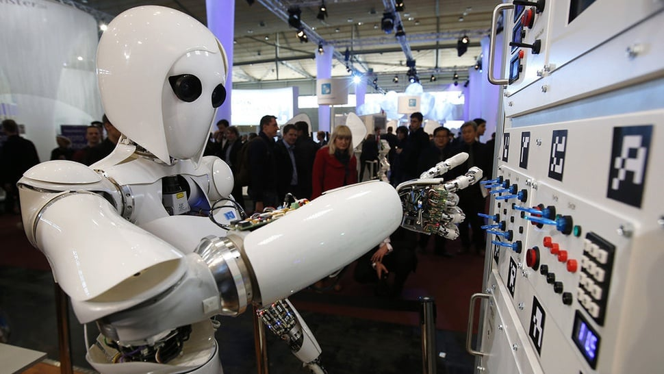

Apa Itu Revolusi Industri, apa Hubungannya dengan kita?
Kemunculan AI sebagai alat untuk mempermudah pekerjaan memunculkan pro dan kontra, tapi apakah hal serupa pernah terjadi seperti ini sebelumnya ?. Yuk kita kulas.
sumber : tirto.id
Pengertian dan Sejarah
Di kutip dari Wikipedia, Revolusi Industri ialah masa pekerjaan manusia di berbagai bidang mulai digantikan oleh mesin. Dimulai dari Britania Raya dan kemudian menyebar ke seluruh Eropa Barat, Amerika Utara, Jepang, dan menyebar ke seluruh dunia.
Istilah “revolusi industri” pertama kali dikeluarkan oleh Louis Auguste Blanqui dan Friedrich Engels. Revolusi industri juga menjadi perubahan besar dan mendasar yang ikut mempengaruhi berbagai aspek kehidupan manusia, mulai dari ekonomi, sosial, hingga budaya. Karena itu, melalui revolusi ini kita diajarkan untuk bekerja secara efektif dan modern dengan memanfaatkan teknologi.
Selengkapya : Wikipedia